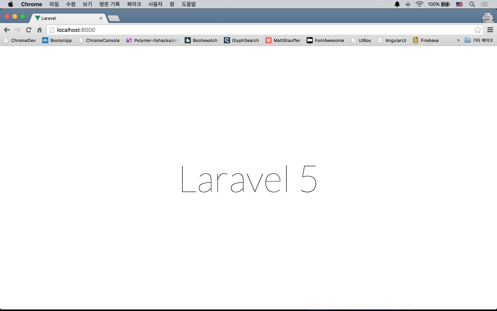
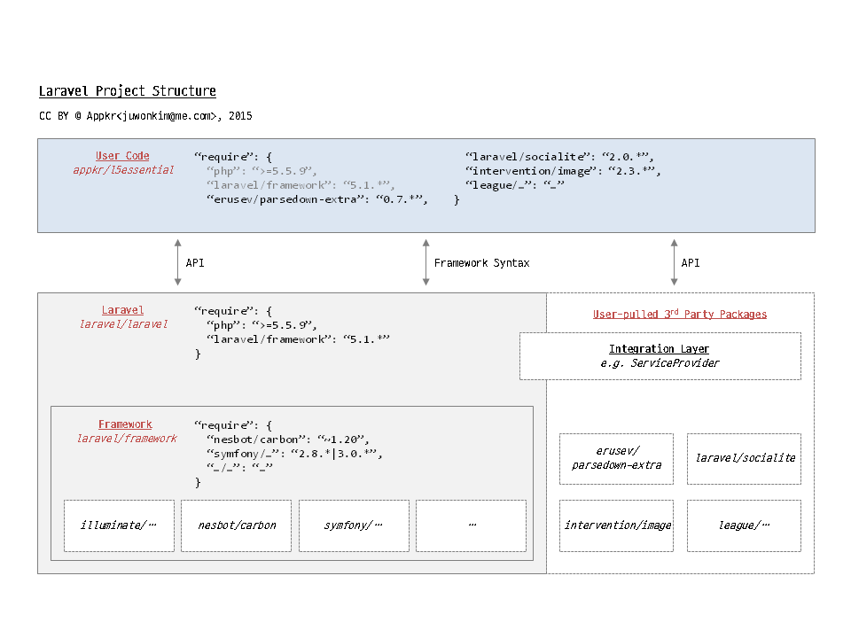
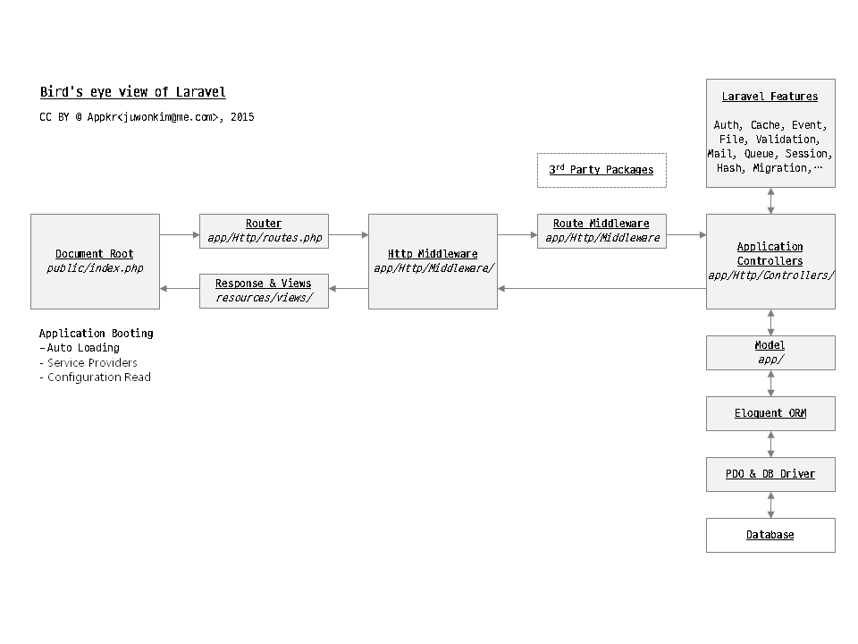

2강 - 라라벨 5 설치하기 (on Mac)
윈도우즈 사용자라면
여기를 참고하자. 장기적으로 보고 Mac 이나 Linux 로 전환할 것을 권장한다. 윈도우즈는 코맨드 프롬프트(콘솔)에서 명령어 사용이 불편해서 생산성이 떨어진다.
터미널에 익숙해 지자.
기본 내장 터미널 (=='콘솔') 소프트웨어를 사용하지 말고, iTerm2(Free) 와 Oh My Zshell(Free) 을 쓸 것을 권장한다. iTerm2 는 Mac 내장 콘솔의 대체 앱이며, Oh My Zshell 은 콘솔의 기능을 더 편리하게 해 주는 플러그인이라 생각하면 된다.
$ sh -c "$(curl -fsSL https://raw.github.com/robbyrussell/oh-my-zsh/master/tools/install.sh)"Mac 용 패키지 매니저인 Homebrew(Free) 도 반드시 설치해 놓자! Homebrew 는 Mac 용 apt-get 이라 이해하면 된다.
$ ruby --version # ruby 2.x
$ ruby -e "$(curl -fsSL https://raw.githubusercontent.com/Homebrew/install/master/install)"개발 환경 셋업
[이 코스에서 사용] 로컬 개발 환경
Mac 사용자라면 2가지 옵션이 있다. 로컬 Mac 을 개발 머신으로 쓰거나, 다음 절에 설명하는 Homestead 를 쓰는 방법이다.
이 코스에서는 로컬 Mac을 개발환경으로 쓰는 것을 가정하고 설명한다. 로컬 Mac에 php, mySql 이 설치되어 있지 않다면 Homebrew 를 이용해 설치하자.
$ brew search php56 # Homebrew 설정에 따라 php56 또는 homebrew/php/php56이 출력될 것이다.
$ brew install homebrew/php/php56
$ brew search mysql5 # 역시 Homebrew 설정에 결과는 다를 수 있다. 가장 높은 버전을 설치하자.
$ brew install homebrew/versions/mysql55
$ /usr/local/bin/mysql.server start터미널을 반드시 한번 껐다가 켜자. 설치되는 동안 사용자의 콘솔 프로파일에 경로를 업데이트했을텐데, 그 경로를 다시 로드하기 위해서다.
$ php --version # 5.6.xx
$ mysql --version # 5.5.xx참고 Mac 부트시 자동으로 mySql 서버를 기동시키려면, mySql 설치 코맨드가 끝난 후 출력된 내용을 유심히 살펴보기 바란다. mv /usr/local/opt/mysql/homebrew.mxcl.mysql.plist ~/Library/LaunchAgents/homebrew.mxcl.mysql.plist와 같은 명령이 있을텐데, 환경마다 다를 수 있을니 필자가 쓴 코맨드가 아니라, 실제 콘솔에 있는 코맨드를 복사해서 콘솔에 붙여 넣고 실행한다.
[OPTIONAL] 공짜로 쓰는 개발 서버 "Homestead"
개발팀 구성원들이 동일한 개발 환경을 가지기 위해서, 또는 Production 과 유사한 환경에서 개발하기 위해서 Homestead 사용을 권장한다. Homestead 는 위에서 언급한 필요 확장 모듈이 기본 설치되어 있다.
설정법은 꽤나 까다로우니 Homestead 설치 (on Mac) 를 참고하자.
라라벨이 동작하기 위한 PHP 버전 및 필요 모듈 조건 확인
라라벨을 설치하려는 개발환경 또는 서버가 아래 필요사항을 충족하는 지 확인한다.
- php 5.5.9 이상
- php Extensions
- OpenSSL
- PDO
- Mbstring
- Tokenizer
$ php --version # PHP 5.6.xx
$ php -m | grep 'openssl\|pdo\|mbstring\|tokenizer'Homebrew 를 통해 설치했다면 기본적으로 모든 모듈이 설치되어 있을 것이다. 하나라도 빠진게 있다면 구글링해서 설치하자~
이제 라라벨을 설치해 보자.
라라벨 인스톨러를 사용할 것을 권장한다. 왜냐하면 Composer 를 이용해 설치하는 것 보다 훨~씬 빠르니까...
먼저, Composer 가 필요하다. 왜냐하면, 라라벨 인스톨러가 Composer 를 통해 배포되기 때문이다.
$ curl -sS https://getcomposer.org/installer | php
$ mv composer.phar /usr/local/bin/composer
$ composer --version # Composer version 1.xx이제 Composer 를 이용해서 라라벨 인스톨러를 설치한다.
$ composer global require "laravel/installer=~1.1"끝이 아니다. laravel과 homestead 코맨드를 어디서든 접근할 수 있게 경로 설정하자.
# 터미널에 익숙치 않은 분이 많아 자세히 쓴다.
# 자신이 사용하는 콘솔에 따라 프로파일 이름이 다를 수 있다. ~/.profile, ~/.bash_profile, ~/.zshrc, ...
# On My Zshell을 설치했다면 ~/.zshrc 이다.
$ nano ~/.zshrc
# 아래와 같이 써진 줄을 찾아 맨 끝에 :$HOME/.composer/vendor/bin 을 추가하자.
export PATH="$PATH:$HOME/.composer/vendor/bin"
# 쇠뿔도 단김에 앞으로 자주 쓰게 될 artisan 코맨드의 별명을 등록해 놓자.
# 앞으로 자주 쓰게될 php artisan 대신 artisan 만 치면 된다.
# 열린 파일 맨 끝에 써 넣는다.
alias artisan="php artisan"
# ctrl + x -> Y -> enter 순으로 눌러 수정 내용을 저장한다.
# 수정된 내용이 반영될 수 있도록 콘솔을 다시 시작하거나, 아래 코맨드를 실행한다.
$ source ~/.zshrc
# laravel 코맨드의 경로가 잘 설정되었는지 확인해 보자.
$ laravel --version # Laravel Installer version 1.x휴~, 이제 설치를 위한 준비가 완료되었다. 라라벨 인스톨러로 라라벨 5를 설치하자.
$ laravel new myProject
$ cd myProject
$ php artisan --version # Laravel Framework version 5.x
$ chmod -R 777 storage bootstrap/cache서버를 부트업하고, 라라벨을 시작해 보자!
# 로컬 서버를 부트한다.
$ php artisan serve # 종료하려면 ctrl+c
# Laravel development server started on http://localhost:8000/브라우저에서 http://localhost:8000 페이지를 방문해서 'Laravel 5' 란 글씨가 써진 화면이 보인다면, 성공적으로 설치한 것이다.

참고 artisan 은 라라벨의 코맨드 라인 툴이다. $ php artisan 을 실행한 후, 설명을 쭈욱~ 한번 살펴보자. 개발 중에 코드에디터와 콘솔을 오가면서, artisan 코맨드를 많이 사용하게 될 것이다.
라라벨의 폴더 구조를 살펴 보자.
처음 설치하면 딱 아래와 같은 형태이다. 지금은 눈에 안들어 오니, 그냥 휘~익 훑어 보자. 코스를 진행하다 보면 저절로 익히게 된다.
.
├── .env # 글로벌 설정 중 민감한 값, dev/production 등 앱 실행환경에 따라 변경되어야 하는 값을 써 놓는 곳
├── app
│ ├── Console
│ │ ├── Commands # 콘솔 코맨드 하우징
│ │ └── Kernel.php # 콘솔 코맨드, 크론 스케쥴 등록
│ ├── Events # 이벤트 클래스 하우징
│ ├── Exceptions # Exception 하우징
│ │ └── Handler.php # 글로벌 Exception 처리 코드
│ ├── Listeners # 이벤트 핸들러
│ ├── Jobs
│ ├── Policies
│ ├── Http # Http 요청 처리 클래스들의 하우징
│ │ ├── Controllers # Http Controller
│ │ ├── Kernel.php # Http 및 Route 미들웨어 등록
│ │ ├── Middleware # Http 미들웨어 하우징
│ │ ├── Requests # Http 폼 요청 미들웨어 하우징
│ │ └── routes.php # Http 요청 Url을 Controller에 맵핑시키는 규칙을 써 놓은 테이블
│ └── Providers # 서비스 공급자 하우징 (config/app.php에서 바인딩 됨)
│ ├── AppServiceProvider.php
│ ├── AuthServiceProvider.php
│ ├── EventServiceProvider.php # 이벤트 리스너, 구독 바인딩
│ └── RouteServiceProvider.php # 라우팅 바인딩 (글로벌 라우팅 파라미터 패턴 등이 등록되어 있음)
├── composer.json # 이 프로젝트의 Composer 레지스트리, Autoload 규칙 등이 담겨 있다. (c.f. Node의 package.json)
├── config # database, queue, mail 등 글로벌 설정 하우징
├── database
│ ├── migrations # 데이터베이스 스키마
│ └── seeds # 생성된 테이블에 Dummy 데이터를 삽입하는 클래스들 (개발 목적)
├── gulpfile.js # Elixir (프론트엔드 빌드 자동화) 스크립트
├── public # 웹 서버에 의해 지정된 Document Root
├── resources
│ ├── assets # JavaScript, CSS 하우징
│ ├── lang # 다국어 지원을 위한 언어 레지스트리 하우징
│ └── views # 뷰 파일 하우징
├── storage # Laravel5 파일 저장소
└── vendor # composer.json의 저장소라라벨의 프로젝트 구조
아래 그림을 보자. 방금 설치한 상태가 그림 왼쪽에 빨간색으로 표시된 Laravel (laravel/laravel) 과 Framework (laravel/framework) 가 설치된 상태이다. 별도로 분리해 놓은 이유는 Framework 요소가 Laravel 이 아닌, 가령 Lumen 처럼 다른 프로젝트에서도 사용할 수 있도록 하기 위해서이다.
라라벨이 제공하는 문법과 API 들을 이용해서 User Code (appkr/l5essential) 라고 표시된, 우리만의 서비스를 만들게 된다. 이 과정에서 라라벨에서 제공하는 기본 기능외에 외부의 패키지들, User-pulled 3rd Party Packages 라 표시된 부분들도 가져와서 사용하게 된다.

라라벨의 동작 시퀀스
역시 마찬가지다. 지금은 몰라도 된다. 나중에 한번 돌아와서 다시 보게 된다면, 아~ 하고 이해될 것이다.
